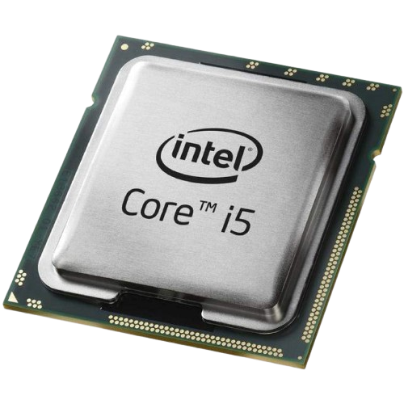

El procesador (o CPU) es el cerebro del ordenador, la consola o el móvil. Es un pequeño chip que lee todas tus órdenes y realiza millones de cálculos por segundo para que todo funcione al instante.
Cada vez que mueves el ratón, pulsas una tecla o juegas una partida, el procesador dirige al resto de piezas del equipo para que respondan rápido y sin bloqueos. Su potencia depende de sus núcleos (cuántos "cerebros" tiene para hacer varias cosas a la vez) y de su velocidad en GHz (qué tan rápido piensa).
UNIDAD DE CONTROL |
UNIDAD ARITMETICOLÓGICA |
|
La Unidad de Control (o UC) es el director de orquesta que vive dentro del procesador. Aunque no hace cálculos matemáticos por sí misma, es la pieza encargada de leer las instrucciones, entender qué hay que hacer y dar órdenes al resto del equipo. Cada vez que pulsas una tecla o mueves el personaje de un juego, la Unidad de Control organiza el tráfico de datos para que cada componente haga su trabajo en el momento exacto. Sin ella, el procesador tendría mucha potencia, pero nadie sabría qué tarea toca hacer primero ni dónde guardar los resultados. |
La Unidad Aritmético-Lógica (o ALU) es la supercalculadora que hay dentro del procesador. Es la pieza encargada de hacer todo el trabajo matemático y tomar decisiones lógicas a una velocidad increíble. Mientras la Unidad de Control da las órdenes, la ALU se encarga de sumar, restar, multiplicar o comparar datos en millonésimas de segundo. Gracias a ella, el ordenador puede calcular desde el resultado de una cuenta hasta la trayectoria exacta de un disparo o el movimiento de un personaje en un videojuego. |